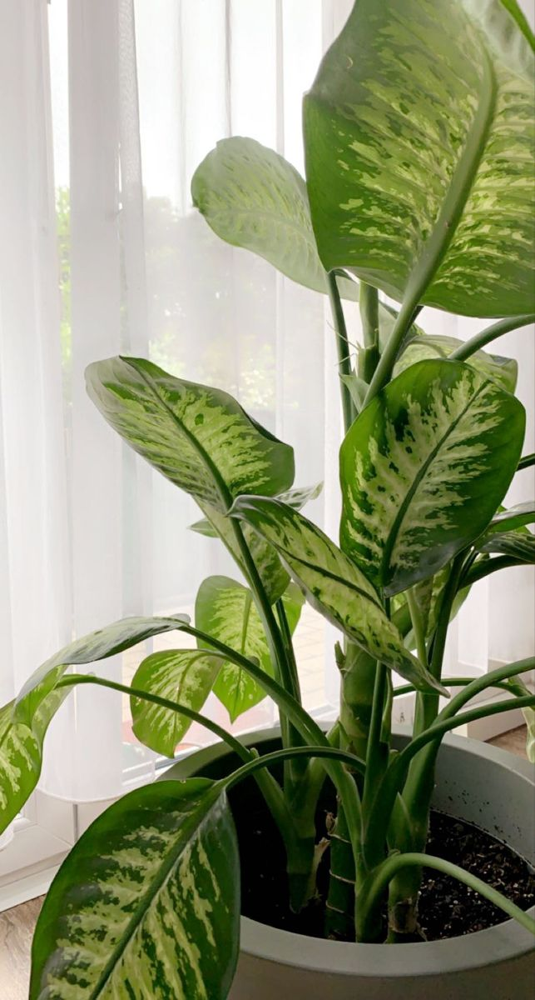
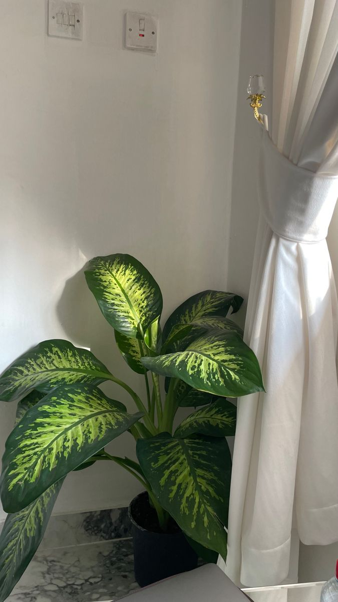

Guideline-grounded · point of care
AccuCare puts your trusted guidelines — NICE, WHO, and your own protocols — directly into the consultation room, with every recommendation traced back to its source. Built so clinicians spend less time cross-checking and more time with patients.
What AccuCare does
Ask a clinical question in plain language and get an answer drawn only from your indexed trusted guidelines — never invented.
Every recommendation is cross-checked against the retrieved source before it's shown, with unverified answers clearly flagged.
Turn a consultation into a structured, saved clinical report in seconds — searchable later by patient or date.
Follow-up questions understand the thread — no repeating patient context turn after turn.
Export any report as a formatted PDF, ready to attach to a patient record or hand to a colleague.
Load NICE, WHO, and your institution's own protocols side by side — AccuCare cites which one it drew from.
"The first tool where I don't have to double-check every citation myself — it already tells me when it isn't sure."
— Early pilot feedback, internal medicine
About AccuCare
AccuCare is a clinical decision-support tool built for the moment a doctor needs a specific, sourced answer — not a search engine result, not a chatbot guessing from memory. It retrieves directly from indexed guideline documents like NICE and WHO protocols, and verifies every citation it writes against what was actually retrieved before it's shown to you.
Where most AI tools blur the line between "I know this" and "I found this," AccuCare keeps that line visible — so you always know whether a recommendation is guideline-sourced or needs a second look.
Built by
What clinicians are saying
"It flagged an unverified citation I would've otherwise trusted. That's exactly the kind of safety net I want from an AI tool."
"Cuts the time I spend digging through PDFs for the exact page. I get the answer and the source in one place."
"Report generation alone saves me ten minutes per patient — and it's already linked to the record."
Get started
Request a walkthrough and we'll show how AccuCare indexes your protocols and grounds every answer to them.